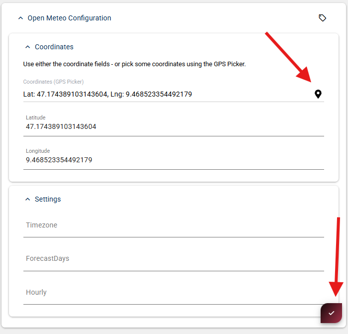
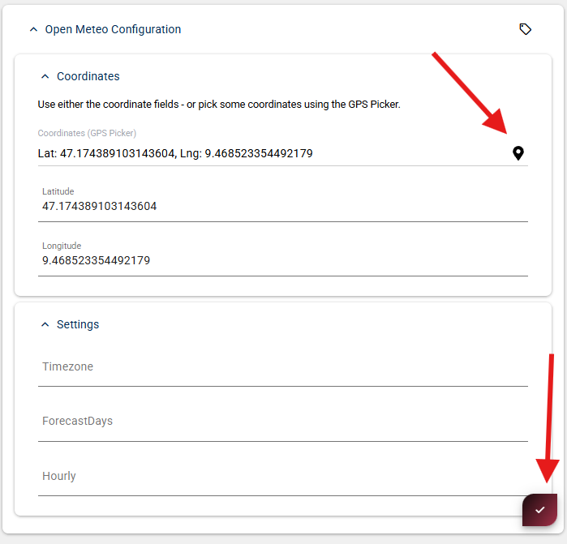
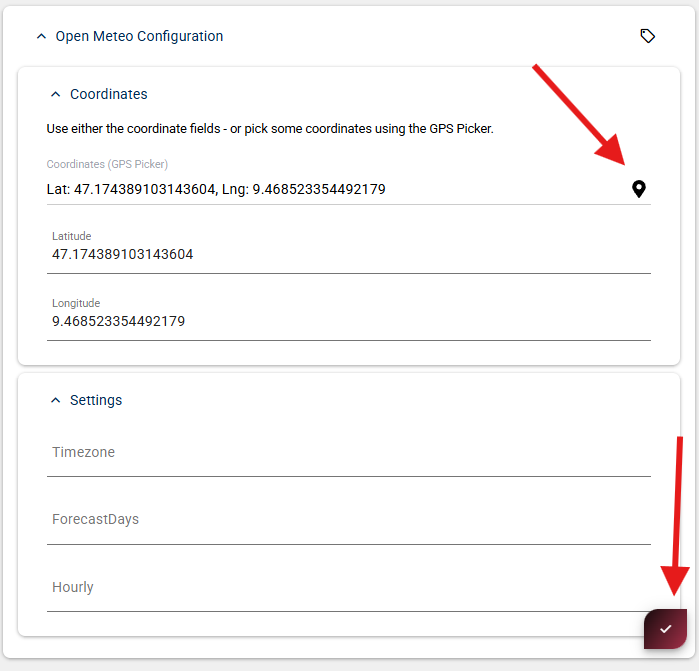

This App Extension adds ready-to-use 2sxc DataSources for the public Open-Meteo weather API.
It lets you pull Current weather and/or Forecast data into 2sxc streams, so you can use it like any other DataSource in Visual Query / code.
Both DataSources accept configuration (see OpenMeteoParameters) and return data with a model matching the OpenMeteoResult.
For parameters you can set the following in code or Visual Query:
Latitude
Longitude
Optional parameters (recommended):
Timezone (e.g. Europe/Amsterdam, default is auto matching the coordinates)
Only parameters shown in the DataSource configuration UI are supported.
Configure them either through Visual Query or via code when creating the DataSource.
Add the DataSource Open-Meteo Current or Open-Meteo Forecast
Set the configuration values (Latitude/Longitude/…)
Connect it to your output

Tip
In the configuration UI, click the small map icon next to the coordinate fields to pick latitude/longitude from a map.
Below are intentionally short examples. Your actual namespace/class names may differ depending on where you placed the files.
Current weather
Creates an instance of the OpenMeteoCurrent DataSource
Passes location and configuration values
Access fields by name (as shown in the Visual Query inspector)
Parameters:
Latitude (required): Decimal degrees, e.g. 47.1674
Longitude (required): Decimal degrees, e.g. 9.4779
Timezone (optional): IANA timezone, e.g. "Europe/Amsterdam", default is auto (matches coordinates)
Temperature Units:
Temperature is always returned in Celsius. To get Fahrenheit, use the TemperatureFahrenheit helper property on the result.
@inherits Custom.Hybrid.RazorTyped
@using AppCode.Extensions.OpenMeteo
@using AppCode.Extensions.OpenMeteo.Data
<h3>Current Weather</h3>
@{
// Create a data source for current weather data from OpenMeteo API
var currentDs = Kit.Data.GetSource<OpenMeteoCurrent>(parameters: new OpenMeteoParameters() {
Latitude = 47.1674, // Vaduz, Liechtenstein
Longitude = 9.4779, // Vaduz, Liechtenstein
Timezone = "Europe/Zurich"
});
// Use the strongly-typed model
var current = As<OpenMeteoResult>(currentDs);
}
@* Display message if the API didn't return any weather data, then exit *@
@if (current == null)
{
<div class="alert alert-warning">
No data available
</div>
return;
}
@* Display the current weather information retrieved from the API *@
<ol>
<li>
<strong>When:</strong> @current.When
</li>
<li>
<strong>Temperature:</strong> @current.Temperature °C
</li>
<li>
<strong>Weather:</strong> @current.Weather
</li>
</ol>
Creates an instance of the OpenMeteoForecast DataSource
Iterates over the items and accesses fields by name
Parameters:
Latitude (required): Decimal degrees, e.g. 47.1674
Longitude (required): Decimal degrees, e.g. 9.4779
Timezone (optional): IANA timezone, e.g. "Europe/Amsterdam", default is auto (matches coordinates)
ForecastDays (optional): Number of days (1-16), default is 1
Temperature Units:
Temperature is always returned in Celsius. To get Fahrenheit, use the TemperatureFahrenheit helper property on the result.
Tip
You can cast the stream to the OpenMeteoResult model using AsList<OpenMeteoResult>(forecastDs).
@inherits Custom.Hybrid.RazorTyped
@using System.Linq
@using AppCode.Extensions.OpenMeteo
@using AppCode.Extensions.OpenMeteo.Data
@{
// Create a data source for hourly weather forecast from OpenMeteo API
// Returns one record per hour for the specified number of forecast days
var forecastDs = Kit.Data.GetSource<OpenMeteoForecast>(parameters: new OpenMeteoParameters() {
Latitude = 47.1674, // Vaduz, Liechtenstein
Longitude = 9.4779, // Vaduz, Liechtenstein
ForecastDays = 1, // Number of days to forecast
Timezone = "Europe/Zurich"
});
// Use the strongly-typed model
var items = AsList<OpenMeteoResult>(forecastDs).ToList();
}
@* Display message if the API didn't return any forecast data, then exit *@
@if (!items.Any())
{
<div class="alert alert-warning">
No forecast data available
</div>
return;
}
@* Show the forecast data *@
<h3>
Weather Forecast for the next @items.Count hours
</h3>
<table class="table table-striped">
<thead>
<tr>
<th>When</th>
<th>Temperature (°C)</th>
<th>Weather</th>
</tr>
</thead>
<tbody>
@* Each row displays one hour of forecast data *@
@foreach (var item in items)
{
<tr>
<td>@item.When</td>
<td>@item.Temperature °C</td>
<td>@item.Weather</td>
</tr>
}
</tbody>
</table>
 
